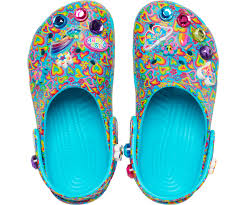

Lisa Frank (born April 21, 1955) is an American businesswoman, the founder of Lisa Frank Incorporated, headquartered in Tucson, Arizona. She is known for producing whimsical commercial design for school supplies and other products that are primarily marketed to children.
Frank is the founder and CEO of Lisa Frank Incorporated.[3] After moving from the Detroit, Michigan, area to Tucson, Arizona, in the 1970s to study art at the University of Arizona, she founded the children's jewelry company Sticky Fingers, which became Lisa Frank Inc. circa 1979 when she was 24.[4][5] She continues to lead it as of 2019. Her corporation's artwork features rainbow and neon colors and stylized depictions of animals, including dolphins, pandas, and unicorns. In the 1980s and 1990s, her products – including school supplies such as lunchboxes and Trapper Keepers, as well as toys and stickers[6] – were popular among elementary and middle school-aged girls.[7] The company's headquarters is in Tucson, Arizona.[8] The company no longer produces its own products and as of at least 2018 licenses its name to smaller companies.[9] Lisa Frank's qualities as a business owner have been called into question by former employees who indicated that issues at the company were not solely related to Frank-ex-husband Green's leadership.[10] Employees described Frank's leadership as "abusive" and "oppressive" and indicated that it was the worst place they had ever worked.[10] Turnover was extremely high, and Lisa Frank Inc. had to settle a number of lawsuits regarding unpaid contractors and builders, failure to pay severance packages, and refusal to pay out final paychecks.[10] In 2011, she launched a colorful line of clothing.[7]
Frank partnered with Reebok to release two versions of limited-release Reebok Classic Leathers shoes in 2017.[11] In 2017, Frank was partnering with producer Jon Shestack to develop a movie inspired by her work.[12] In 2019, Frank designed the logo for John Mayer's Instagram television series, Current Mood.